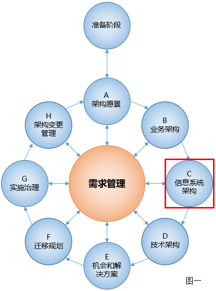
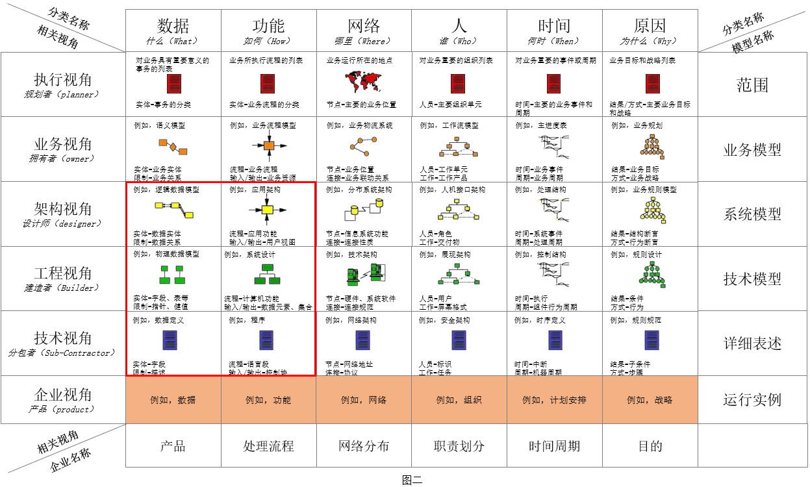
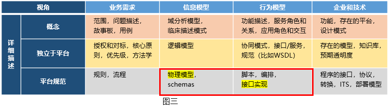
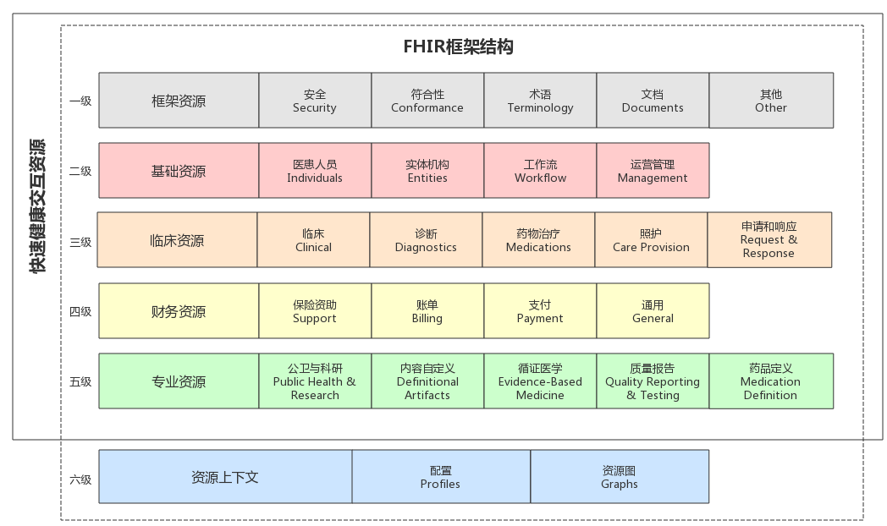
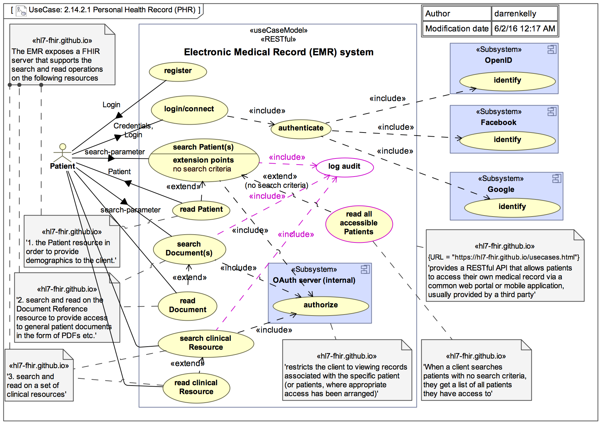

At its core, FHIR contains two primary components:FHIR核心包括两部分
Resources - a collection of information models that define the data elements, constraints and relationships for the “business objects” most relevant to healthcare. From a model-driven architecture perspective, FHIR resources are notionally equivalent to a physical model implemented in XML or JSON. See the formal definition.Resources--定义医疗行业相关的“业务对象”的数据元素、约束和关系的信息模型集合。从模型驱动的体系结构的角度来看，fhir资源在概念上等同于XML或JSON中实现的物理模型。参见定义。
APIs – a collection of well-defined interfaces for interoperating between two applications. Although not required, the FHIR specification targets RESTful interfaces for API implementation. See details on FHIR RESTful interfaces.APIS--定义良好的接口集合，用于两个应用程序之间的互操作。尽管不是必需的，但是fhir规范针对的是用于API实现的RESTful接口。请参阅有关fhir restful接口的详细信息。>
In the healthcare domain, the set of “business objects” is not universally defined, but there is a notional and ongoing evolutionary,
consensus-based process for standardizing on a core set of common business objects including things like “a patient”, “a procedure”,
“an observation”, “an order”, etc. (see a list of defined resources). The FHIR specification provides
a framework for defining these healthcare business objects (“resources”), for relating them together in a compositional manner, for
implementing them in a computable form, and for sharing them across well-defined interfaces. The framework contains a verifiable and
testable syntax, a set of rules and constraints, methods and interface signatures for “FHIR-aware” APIs, and specifications for the
implementation of a server capable of requesting and delivering FHIR business objects.
在医疗领域，“业务对象”的集合没有一种统一定义，但有一个概念性的和持续改进的基于共识的标准化核心业务对象集的定义，
包括“患者”、“过程”，
“观察”、“顺序”等（请参见已经定义的resources列表）。fhir规范
定义这些医疗保健业务对象（“资源”）的框架，用组合的方式将它们关联在一起，
以可计算的形式实现它们，并在定义良好的接口之间共享它们。框架包含可验证的和
可测试语法、“fhir-aware”API的一组规则和约束、方法和接口签名，以及
能够请求和传递fhir业务对象的服务器的实现。
From an operational perspective, HL7’s internal standards development and governance processes determine what constitutes a
resource and which resources exist. In addition, the FHIR specification also provides a mechanism for contextualizing resources for
specific needs within specific bounds (see Profiling Resources).
从操作的角度来看，HL7的内部标准开发和治理过程决定了什么构成了
资源和哪些资源应该保留。此外，fhir规范提供了一种为特定需求定义特定resources的机制（请参阅资源定义一览）。
2.16.1 Architecture Frameworks and FHIR Alignment FHIR适应了架构思想
FHIR resources fit firmly within the information architecture domain and the FHIR APIs for data exchange
address aspects of application architecture.
FHIR resources在信息体系结构领域和用于数据交换的fhir API中比较好地适应了应用程序架构体系的某些方面。
From a TOGAF perspective , FHIR addresses aspects of architecture
views related to information model definition and data exchange, which are described in the Information Systems Architectures portion
of the TOGAF Architecture Development Method.
从TOGAF 架构，FHIR符合
“信息系统体系结构”部分中描述的
TOGAF架构开发方法的信息模型中定义和数据交换相关的视图

With regards to the Zachman Framework , FHIR fits
within the What and the How dimensions of the Architect, Engineer and Technician Perspectives
从Zachman 架构 的角度, FHIR的设计符合Architect，Engineer，Technician中的what,how维度

When considering the HL7 Services Aware Interoperability Framework (SAIF) ,
FHIR resources and RESTful APIs represent the “Physical Models” and “Interface Implementations” within the Platform Specific Specifications layer of the
Information Models and the Behavioral Models Viewpoints, respectively.
从 HL7服务框架的角度 ，FHIR resources和RESTFUL API分别代表的信息模型中的物理模型和行为模型中的接口
实现

2.16.2 FHIR and Architectural Principles FHIR和架构原则
FHIR’s primary purpose is to address interoperability with well-structured, expressive data models and simple, efficient data exchange mechanisms.
In addition, FHIR aligns to the following architectural principles:
fhir的主要目的是解决与结构良好、具有表现力的数据模型和简单、高效的数据交换机制之间的互操作性。
此外，fhir符合以下架构原则：
Reuse and Composability – FHIR resources are designed with the 80/20 rule in mind – focus
on the 20% of requirements that satisfy 80% of the interoperability needs. To this end,
resources are designed to meet the general or common data requirements of many use cases
to avoid the proliferation of numerous, overlapping and redundant resources. Extension and customizations exist
(see FHIR Profiles) to allow common, somewhat generic resources to be adopted
and adapted as needed for specific use case requirements. In addition, FHIR resources are highly composable
in that resources commonly refer to other resources. This further promotes reuse and allows for complex structures
to be built from more atomic resources.
重用和可组合性——fhir资源的设计遵循了二八定律——20%重要的部分满足其他80%的互操作需求。
为此，资源被设计为满足许多用例的一般或通用数据需求，以避免大量、重叠和冗余资源的扩散。存在扩展和定制（参见fhir概要文件），以允许根据特定用例需求采用和调整通用的资源。
此外，fhir资源具有很高的可组合性，通常指的是其他资源。这进一步促进了重用，并允许从更多的原子资源构建复杂的结构。
Scalability – Aligning FHIR APIs to the REST architectural style ensure that all transactions are stateless which
reduces memory usage, eliminates the needs for “sticky” sessions within a server farm and therefore supports horizontal scalability.
可伸缩性——将fhir API与REST体系结构风格相协调，确保所有事务都是无状态的
减少内存使用，消除了服务器集群中同步会话的需要，因此支持水平扩展。
Performance – FHIR resources are lean and suitable for exchange across the network. Highly optimized formats are available, which has the potential to
improve performance in complex transactions across multiple systems connected via a shared and finite network, though most implementers find the standard
JSON / XML formats adequate.
性能-FHIR resource比较适合在网络上进行交换。高度优化的可用格式，这为
提高通过共享和有限网络连接的多个系统之间复杂事务的性能提供了前提，大多数实现人员发现
JSON/XML格式标准足够满足数据交换的需求。
Usability – FHIR resources are understood by technical experts and non-technical people alike. Even if the details of
XML or JSON syntax are not understood, non-technical people can view these in any browser or text reader and understand the contents within them.
可用性——技术专家和非技术人员都能理解FHIR resource。即使对
XML或JSON语法的细节不太理解，他们可以在任何浏览器或文本阅读器中查看这些语法，并理解其中的内容。
Data Fidelity – FHIR is strongly typed and has mechanisms built in for clinical terminology linkage and validation. In addition,
XML and JSON documents can be validated syntactically as well as against a defined set of business rules. This promotes high data
fidelity and goes a long way towards using FHIR to achieve semantic interoperability.
数据保真度——fhir是强类型的，具有内置的临床术语链接和验证机制。此外，
XML和JSON文档可以在语法上以及根据一组定义的业务规则进行验证。这促进了高数据
准确性，但是使用fhir来实现语义互操作性还有很长距离。
Implementability – One of the driving forces for FHIR is the need to create a standard with high adoption across disparate developer communities.
FHIR is easily understood and readily implemented using industry standards and common mark-up and data exchange technologies.
可实现性——FHIR的动力之一是在不同的开发人员社区中创建一个高度可用的标准。
使用行业标准、通用标记和数据交换技术，很容易理解和实现FHIR。
There are additional architecture principles related to consistency, granularity, referential integrity, and others that are not as
well established or proven. See the section below on Outstanding Issues for details.
还有一些与一致性、粒度、引用完整性相关的附加体系结构原则，以及其他与
成熟的或被证实的。有关详细信息，请参阅下面有关未解决问题的部分。
2.16.3 FHIR Decomposition FHIR结构解析
As discussed, FHIR’s principal components are resources and RESTful APIs. However, there is more to the FHIR specification including the components depicted below.
如前所述，fhir的主要组件是resources和RESTfulAPI。但是，fhir规范中还有更多内容，包括下面描述的组件。
NOTE: The term “component” is used loosely to mean a part of something and does not intend to carry the specific meanings for this term
provided by rigorous ontologies, modeling frameworks, or other architectural and organizational constructs. Diagrammatically, the components
below are depicted below as UML classes. This is done purely to take advantage of the semantics afforded using this notation. FHIR is neither
objected oriented in its modeling approach nor are the components that make up the FHIR specification UML classes or objects in the formal sense.
Likewise, the UML packages shown below are notional and used for organizational purposes only.
注：术语“组成部分”用于表示某事物的一部分并不太准确，并不带有该术语由严格的本体论、建模框架或其他体系结构和组织结构规定的特定含义。
图形化表示上，下方图示中的组件
描述为UML类，这样做纯粹是为了利用使用这个符号所提供的语义。FHIR既不是
面向对象的建模方法，也不是组成fhir规范的UML类或对象的组件。
同样，下面显示的UML包是概念性的，仅用于展示目的。
As shown in the diagram below, it is convenient to think of the FHIR specification as having components that address the following:
如下图所示，可以很方便地将fhir规范视为具有处理以下问题的组件：
Information Model – the components of FHIR related to the creation of FHIR resources
信息模型——与创建fhir资源相关的fhir组件
Constraints – the components of FHIR addressing constraints and validity
约束——fhir处理约束和有效性的组成部分
Terminology – the components of FHIR related to clinical terminologies and ontologies
术语——与临床术语和本体相关的fhir的组成部分
Usage – the component of FHIR addressing the use of FHIR in a run-time capacity
用途——处理运行时容量中使用fhir的fhir组件
The following list provides general guidelines that apply when FHIR resources are defined. Most of these items are not enforced programmatically
requiring human due diligence and governance to ensure adherence.
以下列表提供了定义fhir Resources时适用的一般准则,这些项目中的大多数不是以编程方式强制执行的
需要人们遵守以下规则达到规范的目的。
Resources should have a clear boundary; one that matches one or more logical transaction scopes
Resources应该有一个清晰的边界；与一个或多个逻辑事务范围相匹配的边界
Resources should differ from each other in meaning, not just in usage (e.g., each different way to use a lab report should not result in a different resource)
Resources应该在含义上彼此不同，而不仅仅是在使用上（例如，使用实验室报告的每种不同方法不应该导致不同的资源）
Resources need to have a natural identity
Resources需要具有自然特性
Most resources should be very common and used in many different business transactions
大多数resources应该非常常见，并在许多不同的业务事务中使用
Resources should not be specific or detailed enough to preclude support for a wide range of business transactions
Resources太足够具体或详细，将会缺失对广泛业务交易的支持
Resources should be mutually exclusive [this is a very important consideration that helps to reduce redundancy and ambiguity]
Resources应该相互排斥[这是一个非常重要的考虑因素，有助于减少冗余和模糊性]
Resources should use other resources, but they should be more than just compositions of other resources; each resource should introduce novel content
Resources应该使用其他资源，但它们应该不仅仅是其他资源的组成部分；每个资源都应该引入新的内容
Resources should be organized into a logical framework based on the commonality of the resource and what it links to (see resource framework below)
Resources应该根据共性及其所链接的内容，织成一个逻辑框架（见下面的资源框架）。
Resources should be large enough to provide meaningful context; resources that contain only a few attributes are likely too small to provide meaningful business value
Resources应足够大，以提供有意义的上下文；仅包含少数属性的资源可能太小，无法提供有意义的业务价值。
Resources should reflect general usage:
资源应反映一般用途：
if most systems treat something as a single concept, that suggests a single resource; if most systems treat something as distinct concepts, then that suggests multiple resources
如果大多数系统将某个事物视为一个概念，这意味着单个resource；如果大多数系统将某个事物视为不同的概念，那么这意味着多个resource
if two different uses of a "resource" would result in wildly different interpretations of what constitutes "core" then that suggests two resources might be appropriate.
如果对“resource”的两种不同使用会导致对“核心”的不同解释，那么这就意味着两种资源可能是合适的。
There is a bias towards fewer resources rather than more
人们倾向于减少资源而不是增加资源
2.16.5 Organizing FHIR Resources 组织FHIR资源
It is impractical to model the entirety of health data in a single information model. Every modeling
initiative in healthcare from HL7 version 2 message specifications to FHIR resources decomposes the
healthcare domain into smaller, more manageable sub-domains or information model snippets. With FHIR,
each resource is essentially a snippet of the larger healthcare information domain.
用一个单一的信息模型来模拟整个医疗数据是不现实的。每个建模
从HL7 version 2消息规范到FHIR resource的医疗保健计划分解了
医疗领域分为更小、更易于管理的子域或信息模型片段。用FHIR，
每个资源本质上都是大型医疗保健信息领域的一小部分。
When breaking down the healthcare information model into smaller chunks (or resources for FHIR), it
is important to have a framework and set of guidelines to promote consistency and integrity within
the resource structures and in the way resources reference each other. The framework shown below
includes health information model sub-categories organized into layers based on their degree of
commonness. The layers and categories are useful for identifying which parts of healthcare information
are the most common and therefore need to be the most consistently defined and tightly governed. The
categories at the top layers are the most common and contain the FHIR resources that support the
largest number of common healthcare transactions.
当将医疗信息模型分解成更小的块（或fhir resource）时，
关键在于在resource结构上要有一个框架和一套指导方针来促进内部的一致性，完整性和
资源相互引用的方式。框架如下所示
包括健康信息模型子类别，这些子类别根据其级别组织成层
共性。层次和类别对于识别医疗保健信息的哪些部分很有用
是最常见的，因此需要被最一致的定义和严格的管理。这个
顶层的类别是最常见的，包含支持
最大数量的普通医疗保健交易。
Descriptions of the layers in the framework:
框架中各层的描述:
Foundation Resources Foundation resources: Foundation resources are the most rudimentary, foundational resources. They are often used for infrastructural tasks.
Although not prohibited, they are not always referenced by other resources.
基础resources是最基本、最基本的resources。它们通常用于基础设施任务。尽管不是禁止的，但其他resources并不总是引用它们。
Base Resources Base Resources : Layer two consists of base resources. These are often the leaf nodes of a resource graph. In other words, they are often
referenced by other resources, but don't typically reference other resources themselves. These resources are typically the most commonly used, and
therefore require the highest degree of consistency and architectural rigor. Governance is greatest for resources in layers one and two.
第二层由base resources组成。这些通常是资源图的叶节点。换句话说，它们经常被其他resource引用，但通常不引用其他resource本身。这些resource通常是最常用的，
因此需要最高程度的一致性和架构严密性。对于第一层和第二层中的resource，治理是最大的。
Clinical Resources Clinical Resources: Layer 3 includes the resources that are clinical in nature but are also very common across many use cases. This
includes resources for clinical observations, clinical treatment, care provision, and medications. These resources can be used by themselves, but
typically build on the resources in layer two. For example, an observation resource will reference the patient resource from layer two. These resources
are also frequently contextualized when they are referenced by resources in layers three, four and five.
第3层包括在本质上是Clinical Resources，但在许多用例中也是非常常见的。这包括临床观察、临床治疗、护理和药物的resource。这些resource可以自己使用，但通常建立在第二层的resource之上。
例如，observation resource将引用第二层的patient resource。当这些resoruce被第三层、第四层和第五层中的resoruce引用时，它们也经常被上下文化.
Financial Resources Financial Resources: Layer four is dedicated to financial resources. Logically, financial resources build on clinical and base resources.
For example, a billing resource will reference clinical events and activities as well as base resources like a patient.
第四层专门用于Financial Resources。从逻辑上讲，Financial Resources建立在clinical resource和base resource之上。
例如，billing resource将引用临床事件和活动以及患者等基础资源。
Specialized Resources Specialized Resources: In layer five, we find more specialized resources for less common use cases. These resources almost always reference
resources in lower layers. Given that FHIR places priority on satisfying the most common use cases, there are fewer resources in this layer.
在第五层中，我们为不太常见的用例找到了更专门的resources。这些resources几乎总是引用
下层resources。考虑到fhir优先满足最常见的用例，这一层的resources就更少了。
Resource Contextualization Resource 上下文化: Layer 6 does not contain resources. However, it does extend the composition framework made up by the first
five layers of resources. Layer 6 includes profiles and graphs. Profiles are used to extend, constrain, or otherwise contextualize resources for
a given purpose. Graphs are compositions of resources, or webs of resource, that contain attributes of their own.
第6层不包含resources。但是，它确实扩展了上面的
五层资源。第6层包括外形和图形。配置文件用于扩展、约束或以其他方式将资源上下文化
一个既定的目的。图是包含其自身属性的资源或资源网的组合。

The complete set of FHIR resources organized against this framework is found on the Resources page .
根据框架组织的FHIR resource在resource页上
The framework serves three primary purposes: 这个框架的三个目的是：
Organize resource for navigation and identification
为导航和识别组织resource
Classify resources into categories based on common sense groupings or patterns describing expected structures and/or behaviors amongst resources in the same category
根据常识分组或模式将resource分类，描述同一类别中resources之间的预期结构和/或行为。
Disseminate resources across layers to stratify relative common-ness with the most common resources in the top layers
跨层传播resources，以将相对公共性与顶层最常见的resources分层
Purposes 2 and 3 set the foundation for future architectural rigor and resource governance to optimize
consistency, integrity and predictability of new or refined resources in the future. The actual rules
and patterns will be defined and refined in future FHIR releases. However, one general guideline to
state now is that resources generally reference resources in the same layer or higher. In other words,
a layer 4 resource will typically only reference resources in layers 4, 3, 2 or 1. There is nothing
prohibiting a layer 4 resource from referencing a layer 5 resource, but this is not as common.
Given this guideline, it is possible to identify the resources that are likely to be most common
across use cases and therefore demand the highest degree of consistency and governance. Further, the
framework helps identify the areas where creating new FHIR resources is the highest priority. It is
generally a higher priority to create FHIR resources in the higher layers (layers 1, 2 and 3) than
it is to create FHIR resources in the lower layers (layers 4 and 5) because the higher layer resources
will provide the greatest value across the largest number of use cases and stakeholders. This is not
to say that the business transactions needed for the higher layers are not important, it’s just that
they are not as common across the whole healthcare space.
目的2和3为未来的架构的严谨和resource治理奠定了基础，
未来新资源或提炼资源的一致性、完整性和可预测性。实际规则
模式将在未来的fhir版本中被定义和完善。然而，需要说的是有一个一般性的指导方针：
resource通常引用同一层或更高层的resource。换言之，
第4层资源通常只引用第4、3、2或1层中的资源。没有
禁止第4层资源引用第5层资源，但这种情况实际并不常见。
根据该指南，可以确定最常见的resource
跨用例，因此需要比较高的一致性和治理。此外，
框架帮助确定创建新的fhir resources是最高优先级的领域，
一般来说，它在更高层（第1层、第2层和第3层）中创建fhir资源的优先级高于
它是在较低的层（第4层和第5层）中创建fhir resources，因为较高的层resources
将在最大数量的用例和涉众中提供最大的价值。这不是
说高层所需的业务事务并不重要，只是
它们在整个医疗保健领域并不常见。
The 6th layer of the framework are not actually resources. Profiles and Graphs are extensions of resources
or resource compositions that continue the progression through the FHIR Composition Framework. They provide
additional contextualization required to satisfy certain use cases.
框架的第6层实际上不是resource。配置文件和图形是resource的扩展
或resourceresource组成，通过fhir组成框架继续前进。他们提供
满足某些用例所需的附加上下文化。
There are several benefits expected from aligning the creation of FHIR resources to this framework, including:
将fhir resource的创建与该框架协调起来，预计会带来一些好处，包括：
Organization and manageability of health domains - the framework provides a basis for decomposition and modularity
健康领域的组织和可管理性——框架为分解和模块化提供了基础
Identifying commonality - the framework teases out the common areas from the less common areas
识别共性——框架从非共性领域中梳理出共性领域。
FHIR resources prioritization - the framework provides a structure for determining priorities and delegating work
fhir resources优先级-框架提供了确定优先级和授权工作的结构
Tiered governance levels - the framework separates the areas needing the most stringent and universal governance from those that require more context-specific governance
分层治理级别-该框架将需要最严格和普遍治理的领域与需要更具体上下文治理的领域分开
Another useful tool for visualizing how FHIR resources are organized relative to each other can be found using the Resource Reference
Visualization tool on clinFHIR .
另外一种图形化FHIR resources，展示它们是如何联系的工具可以用clinFHIR
2.16.6.1 FHIR Servers and the FHIR APIs FHIR Servers 和 the FHIR APIs
A FHIR REST server is any software that implements the FHIR APIs and uses FHIR resources to exchange data. The diagram below describes the FHIR interface definitions. The methods are classified as:
fhir rest服务器是实现fhir API并使用fhir资源交换数据的软件。下图描述了fhir接口定义。方法分为：
iServeInstance – methods that perform Get, Put or Delete operations on a resource
IServeInstance–对resource执行获取、放置或删除操作的方法
iServeType – methods that get type information or metadata about resources
IServeType–获取有关resource的类型信息或元数据的方法
iServeSystem – methods that expose or enable system behaviors.
IServerSystem–公开或启用系统行为的方法。
As mentioned, FHIR resources are optimized for stateless transactions with RESTful APIs. Although this is not the only way FHIR resources can be used, these types of transactions are the only ones with defined interfaces and behaviors in the FHIR specification.
如前所述，fhir resources针对使用RESTfulAPI的无状态事务进行了优化。尽管这不是fhir resources的唯一使用方式，但这些类型的事务是fhir规范中唯一具有定义的接口和行为的事务。
FHIR transactions follow a simple request and response transaction pattern. The request and response can be for a single payload or can operate as batch. The payload or a request and response consist of a header and the content of interest. See diagram below for details.
fhir事务遵循简单的请求和响应事务模式。请求和响应可以针对单个负载，也可以作为批处理操作。有效负载或请求和响应由一个头部和感兴趣的内容组成。详见下图。
2.16.6.3 Security 安全
(section to be filled out) (but see Security in the meantime).
(该部分待补充 ,目前可以参阅 安全 部分).
Example Use Cases Using FHIR
FHIR的示例用法
For illustrative purposes, the following diagram depicts a simple use case of a patient accessing their personal health record
(portal) enabled by an underlying electronic medical record (EMR) system. The EMR plays the role of the FHIR server in this example.
为了便于说明，下图描述了患者访问其个人健康记录的简单用例。
（门户）由基础电子病历（EMR）系统启用。在这个例子中，EMR扮演着fhir服务器的角色。
The pre-conditions for this use case are:
此用例的前提条件是：
the EMR implements the necessary FHIR APIs
EMR实现了必要的fhir API
the EMR implements the necessary authentication and authorization mechanisms
电子病历实施必要的认证和授权机制
the patient is successfully authenticated and authorized to access FHIR resources
患者已成功通过身份验证并获得访问fhir资源的授权。
The basic flow of the use case is that the patient registers (if required), logs in, enters search criteria to identify a patient or
patients of interest (the patient is most like themselves in this use case), retrieves clinical documents for the patient and
retrieves clinical resources for the patient. The use cases utilize the GET methods on the iServeInstance interface and works
with the following types of FHIR resources:
用例的基本流程是患者注册（如果需要）、登录、输入搜索条件以标识患者或
感兴趣的患者（在这个用例中，患者与自己最相似），为患者检索临床文档，以及
检索患者的clinical resources。用例使用IServeInstance接口上的get方法并工作
使用以下类型的fhir资源
The Patient resource
病人resource
One or more document resource(s)
一个或多个文档resource
One or more clinical resource(s)
一个或多个clinical resource

Although this example use case is very simple, more complex transactions using a combination of GETs, PUTs and DELETEs against resources and metadata can be envisioned. However, the exact details of these use cases including which methods are used, the orchestration of methods and the specific resources involved are outside the scope of the FHIR specification.
尽管这个示例用例非常简单，但是可以预见使用针对资源和元数据的GET、PUT和DELETE组合的更复杂的事务。但是，这些用例的确切细节，包括使用的方法、方法的编排以及所涉及的特定resource，都不在fhir规范的范围之内。
2.16.7 Outstanding Issues 突出的问题
Resource Consistency and Granularity – there is nothing intrinsically prohibiting one resource from duplicating the same information
as another resource. Further, there is nothing prohibiting resources with the same information from defining and modeling the data elements
differently.
HL7 has a number of processes to ensure that resources are consistently designed, but the question is when to be consistent within the
specification, and when to be consistent with the real world practices of healthcare - these are sometimes in conflict with each other.
Resource granularity is a related potential problem as there are variations in the size, complexity and comprehensiveness of the existing resources.
Resource一致性和粒度——本质上没有什么禁止一个Resource复制与另一个Resource相同的信息。
此外，没有禁止具有相同信息的资源以不同的方式定义和建模数据元素。
HL7有许多过程来确保资源的设计是一致的，但问题是什么时候在规范内保持一致，
什么时候与现实世界中的医疗实践保持一致——这些过程有时会相互冲突。
资源粒度是一个相关的潜在问题，因为现有资源的大小、复杂性和综合性都存在差异。
Further, the degree to which the FHIR specification can impose consistency is limited to how much agreement can be gained across various communities.
While the Implementers Safety Check List and the Considerations for
FHIR Resource Considerations provide guidance and promote consistency,
rules for achieving complete consistency of both content and granularity amongst resources are neither completely defined nor completely enforced.
Considering that FHIR is still a new and emerging standard, an over-abundance of constraint and rigor has been avoided to maximize
initial adoption. Further, there is a natural tension between consistency and an architectural virtue and the practicalities of supporting the real
practice of health care. Considering that FHIR ultimately is a reflection of the health
business processes it supports, FHIR will always carry forward some of the data discrepancies, inconsistencies and gaps that are present in the
practice of healthcare across different organizations and practitioners. Nonetheless, the
issues of resource consistency and granularity is a topic that gets considerable ongoing discussion, and may change as FHIR approaches a final
normative standard and as FHIR adoption approaches a level
where more control is warranted, or more information/process consistency emerges in the existing healthcare systems.
此外，fhir规范对一致性的影响程度仅限于不同社区之间可以达成多少协议。
虽然实施者的安全检查清单和对fhir resource的考虑提供了指导和促进一致性，
但实现资源之间内容和粒度完全一致性的规则既没有完全定义，也没有完全执行。
考虑到fhir仍然是一个正在发展的标准，已经避免了过多的约束和严格，以最大限度地提高初始采用率。
此外，一致性与架构优势以及支持医疗实际做法的实用性之间存在着自然的张力。
考虑到fhir最终是它所支持的医疗业务流程的反映，
fhir将始终在不同组织和从业者的医疗实践中结转一些数据差异、
不一致和差距。尽管如此，资源一致性和粒度问题是一个正在进行大量讨论的话题，
并且可能会随着fhir接近最终规范标准和fhir采用接近一个需要更多控制或现有医疗系统中出现更多信息/流程一致性的水平而改变
Resource References – there are currently a lack of strict rules for what resources should be referenced by other resources and under what circumstance.
There is potential for ambiguity, duplication, inaccurate and/or conflicting information communicated by a resource graph (a collection of linked resources).
Imagine the scenario where Resource Type A (e.g., procedure) references Resource Type B (e.g., encounter) and Resource Type C (e.g., patient), and Resource Type B (e.g., encounter)
also references Resource Type C (e.g., patient). In this scenario, is a reference to Resource A to Resource C meant to provide the same information as the reference
from Resource B to Resource C? If so, is this duplication of information problematic? Note that this is not unique to FHIR - it is an innate property of information systems.
If an actual instance of A, and the B that it references, reference different instances of Resource C (e.g. the procedure references patient X and an encounter for patient Y),
how does the system know that the references are intentionally different versus an error or data anomaly? The problem is that there is limited ability to describe the
intent of the reference which leads to the possibility of ambiguity and error. The Linkage resource can be used to help with this problem,
but additional capabilities may be considered in the future to allow systems to address referential integrity.
Resource引用——目前缺乏对哪些Resource应该被其他Resource引用以及在什么情况下引用的严格规则。Resource图（链接Resource的集合）传达的信息可能存在歧义、
重复、不准确和/或冲突。想象一下这样的场景：Resource类型A（例如，程序）引用Resource类型B（例如，遭遇）和Resource类型C（例如，患者），
Resource类型B（例如，遭遇）也引用Resource类型C（例如，患者）。在这种情况下，ResourceA到ResourceC的引用是否意味着提供与ResourceB到ResourceC的引用相同的信息？
如果是这样的话，这种信息复制有问题吗？请注意，这不是fhir独有的，它是信息系统的固有属性。如果A和B的实际实例引用了ResourceC的不同实例（例如，
程序引用了患者X，遇到了患者Y），那么系统如何知道这些引用相对于错误或数据异常有意不同？
问题是，描述参考意图的能力有限，这导致了模糊和错误的可能性。可以使用链接资源来帮助解决这个问题，但是将来可能会考虑使用其他功能来允许系统处理引用完整性。
Conditional Semantics – Currently, the constraints for element definitions including things like data types, value sets, optionality and cardinality are
defined at design time with limited consideration for variable run-time semantics. Imagine the scenario where the value of Data Element Y (e.g., “intolerance type”) is
constrained differently depending on the value of Data Element X (e.g., “causative agent”) in a given instance of a resource. For example, if the instance of
an Intolerance Resource has the “intolerance type” data element populated with “food intolerance”, then “causative agent” should be constrained to only valid
values for this value set (e.g., valid foods instead of medications or environmental agents). Tools for addressing deep semantic consistency in this
regard are only gradually developing.
条件语义-
目前，元素定义的约束包括数据类型、值集、可选性和基数等。
在设计时定义，对可变运行时语义的考虑有限。假设数据元素y的值（例如，“不容忍类型”）是
根据给定resource实例中数据元素x的值（例如，“因果代理”）的不同约束。例如，如果
不耐受性resource具有“不耐受性类型”数据元素，填充有“食物不耐受性”，那么“致因”应仅限于有效的
此值集的值（例如，有效食品而不是药物或环境因素）。用于解决此问题的深层语义一致性的工具
尊重只是在逐渐发展。
Business Rule Enforcement and Validation – As governance increases and more resource rules are defined, it may be advantageous to have a resource validation
tool that checks for things like resource consistency, duplication, referential integrity, circular or nonsensical references, and other defined and approved
validation rules. Once rules are agreed to, this level of automation can help address the other issues outlined above. These kinds of facilities are planned
for the future.
业务规则实施和验证-
随着治理的增加和更多的resource规则的定义，进行resource验证可能更为有利。
检查resource一致性、重复、引用完整性、循环或无意义引用以及其他已定义和已批准的内容的工具
验证规则。一旦规则达成一致，这一级别的自动化就可以帮助解决上面概述的其他问题。这些设施都是为未来规划好了的
。
 当前位置： 基础板块
当前位置： 基础板块